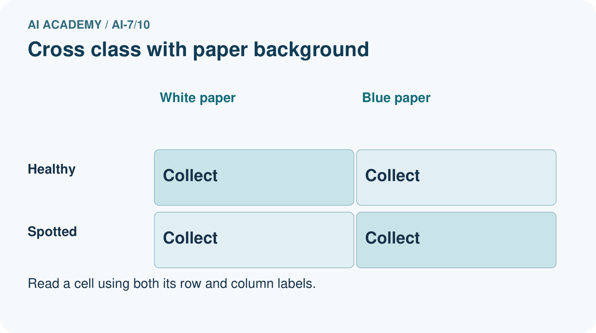
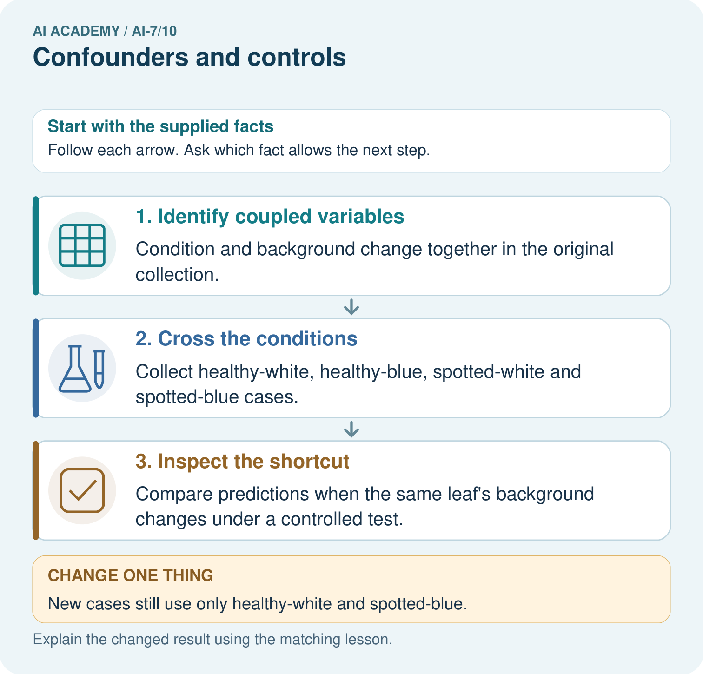
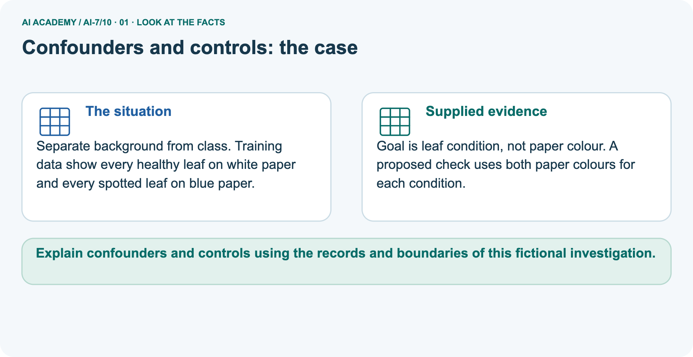
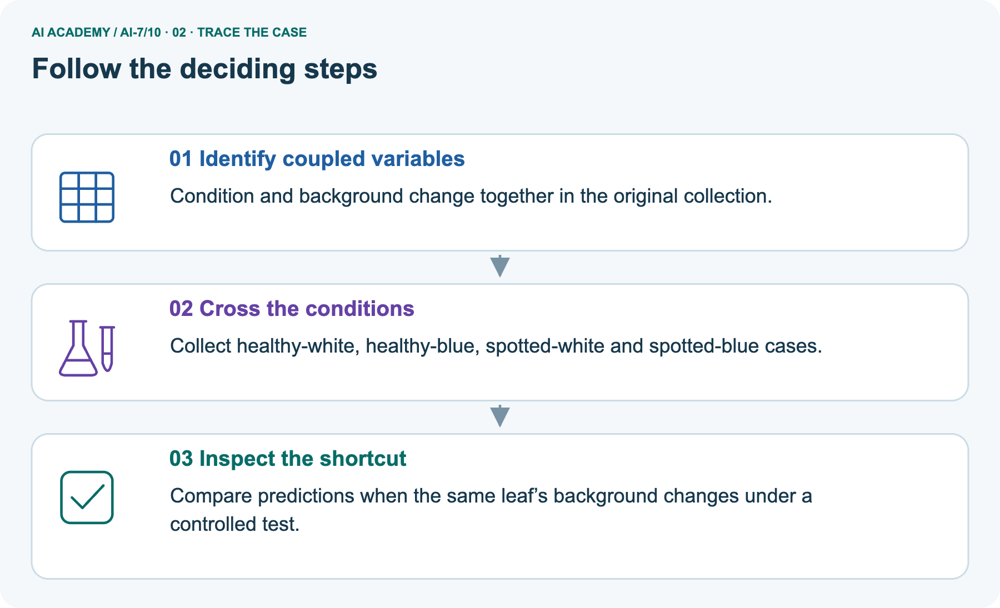
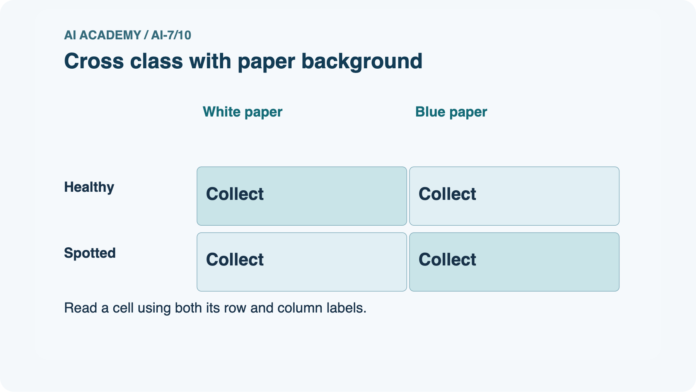
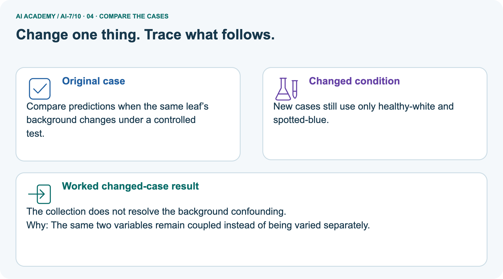
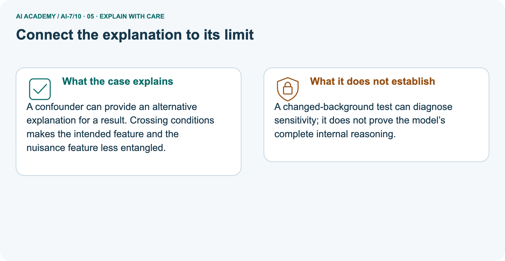
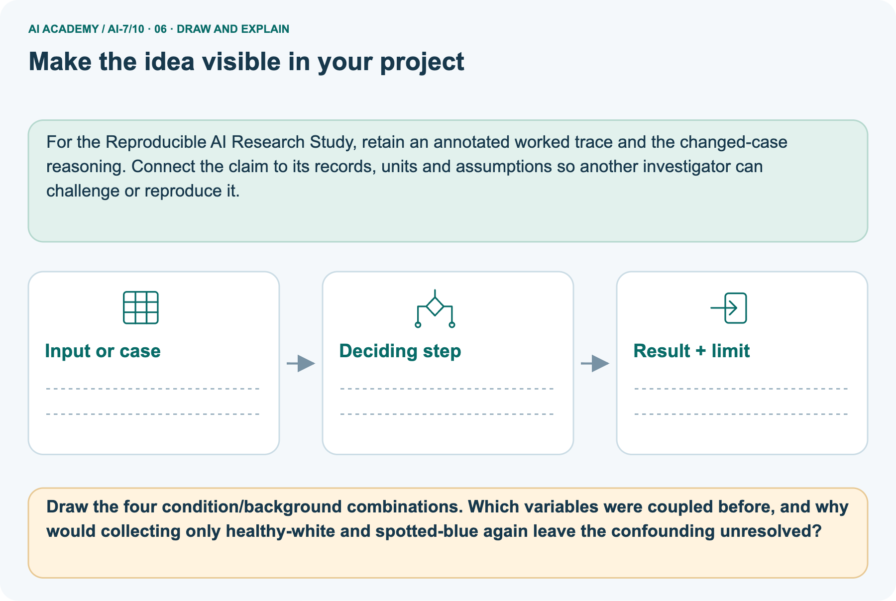

AI Academy · Level 7 · Grade 12 · Week 10 · Student lesson
Confounders and controls
Learn to understand, design, build, test and explain AI systems responsibly.
Project: Reproducible AI Research Study
Before you start
Recall Experimental units and independence. Explain why a recorded result needs its input conditions and evidence source before it can support a claim.
Plan time to read, investigate and explain. Keep predictions separate from observations.
Student lesson · 1 of 18
Your mission
Start with the target: Explain the mechanism and terminology of confounders and controls. Try the recall before opening notes.
Your learning target
I can explain the mechanism and terminology of confounders and controls.
I can apply the stated procedure to a new case with a traceable result.
I can identify an assumption or limitation and design a revealing follow-up.
Remember before reading
Close your notes first. A rough first answer helps us choose the right starting point; it is not a score for your ability.
Without opening the old lesson, explain one key idea from Experimental units and independence. Give an example and a mistake that the idea helps you avoid.
Without opening the old lesson, explain one key idea from Hypotheses and measurable outcomes. Give an example and a mistake that the idea helps you avoid.
Without opening the old lesson, explain one key idea from Methods results and limitations. Give an example and a mistake that the idea helps you avoid.
After trying, check the relevant lesson or ask your teacher. Change the part of your explanation that the evidence shows was wrong.
This week you will practise:
Explain the mechanism and terminology of confounders and controls
Apply the stated procedure to a new case with a traceable result
Identify an assumption or limitation and design a revealing follow-up
Retrieve what you already know
Recall Experimental units and independence. Explain why a recorded result needs its input conditions and evidence source before it can support a claim.
This week’s end goal
Explain confounders and controls using the records and boundaries of this fictional investigation.
Student lesson · 2 of 18
Notice the evidence
Investigate the supplied Confounders and controls case. Separate observations, given facts and assumptions before choosing an explanation.
A confounder changes alongside the intended factor and can offer another explanation. Controls aim to isolate the proposed mechanism.
Begin by writing the question the procedure is intended to answer. Identify the information already supplied, the information it will produce and the information still missing.
These are constructed classroom examples; they do not require live accounts, private records or an external service. Do not treat a plausible explanation as a measured outcome.
Student lesson · 3 of 18
See how it works
Follow the mechanism for Confounders and controls. Connect each labelled input, deciding step and result.
For a toy comparison vary only retrieval method while holding corpus, queries, cutoff and relevance rubric fixed. Randomise or counterbalance order when order effects matter.
Confounders and controls — evidence trace
Before applying the procedure, write its units, denominator or decision boundary where relevant. A partner should be able to repeat each step using the same inputs.
If a required input is absent or violates the stated contract, record that condition explicitly instead of quietly replacing it with a convenient value.
Connect the picture and the explanation
Point to the input, the deciding step and the result in this week’s visual. Explain the same step in ordinary words. A picture helps when you can say what each part represents.
Student lesson · 4 of 18
Compare the cases
Compare the supplied cases for Confounders and controls. Identify the detail that changes the conclusion.
Compare a familiar case with a changed case
New method uses better corpus and different queries while old method uses the original set. Show the intermediate steps and give the conclusion with its scope.
Change one thing in the pictured case
Change one thing
Change: New cases still use only healthy-white and spotted-blue.
Predicted result
Prediction: The collection does not resolve the background confounding.
Why the result follows
Reason: The same two variables remain coupled instead of being varied separately.
Student lesson · 5 of 18
Words that unlock the idea
Use the vocabulary of Confounders and controls to explain a concrete decision, rather than only memorising definitions.
| Word | Meaning |
|---|---|
| Confounder | A differing condition offering another explanation |
| Control | A design constraint preserving comparison conditions |
| Counterbalancing | Varying order to reduce systematic order differences |
Student lesson · 6 of 18
Follow a worked example
Follow the worked trace for Confounders and controls, predict a step, then compare with its explanation.
New method uses better corpus and different queries while old method uses the original set.
Corpus and case differences confound the method effect. Rerun matched inputs or report a whole-system comparison without isolation.
Worked explanation · Confounders and controls
Compare the intermediate evidence with the final statement. Explain why each number or decision follows from the stated inputs.
The conclusion belongs to this scenario and procedure; changing the inputs, evaluation population or authority can change what it establishes. Retain the raw record so a later revision can be compared honestly.
Learn from the worked case
Cover the result before checking it. Say what is given, choose the procedure, and follow one step at a time. Then uncover the result and explain your first mismatch. Ask why a step is allowed, not only what number it produces.
A pictorial worked case: Confounders and controls
Separate background from class. Training data show every healthy leaf on white paper and every spotted leaf on blue paper.
The facts we will use
Supplied facts
Goal is leaf condition, not paper colour. A proposed check uses both paper colours for each condition.


Read the picture one step at a time
Why this result follows
Why the result follows
A confounder can provide an alternative explanation for a result. Crossing conditions makes the intended feature and the nuisance feature less entangled.
What this example does not establish
Keep the stated limit
A changed-background test can diagnose sensitivity; it does not prove the model’s complete internal reasoning.
Keep the stated limit
Read the labelled picture: Draw the four condition/background combinations. Which variables were coupled before, and why would collecting only healthy-white and spotted-blue again leave the confounding unresolved?
Keep the stated limit
Change one thing: New cases still use only healthy-white and spotted-blue. Predict the result before checking the explanation. What remains the same?
Student lesson · 7 of 18
Find and repair a mistake
Find the unsupported step in the Confounders and controls claim and explain a repair using the supplied evidence.
Controls address specified alternatives, not every possible unknown confounder.
Check the claim against the facts
A useful check asks what would make the reasoning fail. Distinguish a failure to execute the declared procedure from a weakness in the procedure itself.
The first may require a correction; the second requires an explicitly revised method and new evidence. Preserve unsuccessful cases so an improved result cannot hide the original problem.
Locate the earliest unsupported step
A report omits this qualification: Controls address specified alternatives, not every possible unknown confounder. Explain how omitting it could change a reader's interpretation, and write an accurate replacement.
Student lesson · 8 of 18
Practise together
Practise Confounders and controls with support, then explain the deciding step in your own words.
Explain the weekly mechanism in your own words. Use the worked scenario to name its input, decision rule and output.
Practise with less help: Trace the worked case
Use workbook W2 for the connected example “Confounders and controls”. First fill the input and rule boxes. Try the middle steps before asking for a hint. After a hint, try the next step yourself.
| Plan | Do | Check |
|---|---|---|
| What is given? Which rule or procedure applies? | Record each intermediate step. | Does the result follow? What remains unknown? |
Explain your trace to a partner. Your partner points to one step to check. Swap roles on the next case. Each person writes their own explanation.
Check your reasoning
Use the worked case for Confounders and controls. Proposed explanation: “The worked result establishes every future case”. Decide whether this explanation is supported.
Point to the step or supplied fact that decides; explain your repair if needed.
Answer on your own before discussion. If you are unsure, say which step you need help with.
Explain the picture
Draw the four condition/background combinations. Which variables were coupled before, and why would collecting only healthy-white and spotted-blue again leave the confounding unresolved?
This is supported practice. Keep the separately named independent case for an attempt before feedback.
Student lesson · 9 of 18
Run the investigation
Investigate Confounders and controls. Record the prediction, actual observation or labelled paper trace, explanation and next test separately.
Predict, investigate and preserve the evidence
New method uses better corpus and different queries while old method uses the original set. Show the intermediate steps and give the conclusion with its scope.
| Record | Your evidence |
|---|---|
| Given input and fixed rule | |
| Prediction before checking | |
| Actual result, or “not run” | |
| First mismatch and one explanation | |
| Boundary or missing input and expected response |
On paper, trace the supplied procedure. If code is provided, predict before running it in a local practice file. Never write an expected answer as though it were an observed run.
Plan → try → check
Before trying: what do I expect, and why? While trying: which step could first go wrong? Afterwards: what did I actually observe, and what should change? Keep “not run” if you only traced the procedure.
Student lesson · 10 of 18
Build your understanding
Move from recall to tracing, diagnosis and transfer in Confounders and controls. Explain why each step is justified.
Explain → apply → challenge
Explain the weekly mechanism in your own words. Use the worked scenario to name its input, decision rule and output.
A report omits this qualification: Controls address specified alternatives, not every possible unknown confounder. Explain how omitting it could change a reader's interpretation, and write an accurate replacement.
For the worked scenario, propose one additional case that could reveal a failure, describe its expected outcome before running it, and explain what would need to remain fixed for a fair comparison.
Do not reuse W4 as a new final test after receiving feedback.
Student lesson · 11 of 18
Connect your project
Apply this week’s idea to Reproducible AI Research Study. Keep an annotated decision and the evidence supporting it.
Add a labelled confounders and controls evidence sheet to Reproducible AI Research Study. Show how you can explain the mechanism and terminology of confounders and controls.
Use the supplied fictional case and keep its inputs, intermediate steps, calculation or prediction, and limitation. Connect this record to last week’s record; a matching answer without a trace is insufficient.
| Project evidence | Record |
|---|---|
| Component and version | |
| Inputs permitted at prediction time | |
| Trace and comparison with earlier work | |
| Failure, limit and human review |
Evidence for your project
For the Reproducible AI Research Study, retain an annotated worked trace and the changed-case reasoning. Connect the claim to its records, units and assumptions so another investigator can challenge or reproduce it.
Student lesson · 12 of 18
Show what you know
Use a genuinely new case for independent evidence. Previously discussed examples remain practice; use the separately named independent case before feedback.
Complete the supported workbook tasks before attempting W4 independently. Record any hints or help used. After feedback, use the teacher's fresh retry rather than copying the earlier answer.
For a project, select a relevant new case, predict the outcome from the declared rule and preserve the result alongside any revision.
For the worked scenario, propose one additional case that could reveal a failure, describe its expected outcome before running it, and explain what would need to remain fixed for a fair comparison.
Do not reuse W4 as a new final test after receiving feedback.
Student lesson · 13 of 18
Study a complete case
Revisit the complete Confounders and controls case for supported practice. Repeated examples do not become fresh assessments.
Complete evidence record
Confounders and controls — evidence trace
Follow the input through the stated procedure to its result. Cover the result first, predict it, then explain every intermediate step. The text/table accompanies the figure so the example can be read without colour.
Student lesson · 14 of 18
Try a new case independently
Attempt the reserved new case before feedback. Record support; the earlier examples below remain additional practice.
Independent case: Apply a new case independently
Every method A run is morning and B run afternoon; network speed varies by time. Propose a repair.
Attempt this case before feedback. Record any help. Earlier examples below are further practice; a case already practised with feedback cannot establish fresh transfer.
Attempt this without hints
Every method A run is morning and B run afternoon; network speed varies by time. Propose a repair.
Record support used: none, hint or teacher explanation. After feedback, a different case is needed to demonstrate independence.
Use feedback to improve
Attempt the independent case before hints. Record whether you worked alone, used a hint or followed a model. After feedback, fix the first unsupported step and explain why it changed.
A later check uses a changed case, not a copied answer.
Student lesson · 15 of 18
Your lesson route
Use this map to navigate Confounders and controls, connect the goals to tasks and keep one evidence record for each attempt.
Start with this question: Separate background from class. Training data show every healthy leaf on white paper and every spotted leaf on blue paper.
| By the end, I can | How I will show it |
|---|---|
| Explain the mechanism and terminology of confounders and controls | Explain the deciding step, show a trace or test, and state one limit. |
| Apply the stated procedure to a new case with a traceable result | Explain the deciding step, show a trace or test, and state one limit. |
| Identify an assumption or limitation and design a revealing follow-up | Explain the deciding step, show a trace or test, and state one limit. |
Remember → watch and explain → try with help → investigate → try independently → keep project evidence. Your teacher may spread this lesson across several classes.
Keep your first prediction. Compare it with what the evidence shows and explain any change.
Student lesson · 16 of 18
Finish and return
Explain Confounders and controls without notes, identify a remaining question and plan a later check with a changed case.
Close your notes. Explain this goal in your own words: Explain the mechanism and terminology of confounders and controls
If you are unsure, return to the worked picture and explain one arrow. If you are ready, change an input or assumption and justify your prediction.
Save your workbook evidence. At the next review, try a different case before opening your old answer.
Student lesson · 17 of 18
Supported practice, repair and portfolio
Attempt supported questions before using hints or feedback. Review a missing building block, then keep the completed work.
Use this supported practice once, in the browser or on paper. Keep the reserved independent assessment for a separate first attempt before teacher feedback.
Separate background from class. Training data show every healthy leaf on white paper and every spotted leaf on blue paper.
Practice 1: explain the deciding evidence
Which labelled step matches this detail? Compare predictions when the same leaf’s background changes under a controlled test.
1. Identify coupled variables
2. Inspect the shortcut
3. Cross the conditions
Hint · try first
Hint if needed: Read the steps in the pictorial case. Match the supplied detail to the stage that performs or records it.
Feedback · compare after trying
After your attempt, compare with the supported explanation: Inspect the shortcut Compare predictions when the same leaf’s background changes under a controlled test.
A confounder can provide an alternative explanation for a result. Crossing conditions makes the intended feature and the nuisance feature less entangled.
Practice 2: explain the deciding evidence
Changed case · predict first
Changed-case practice: New cases still use only healthy-white and spotted-blue. Which conclusion is supported by the supplied facts?
1. We can decide the result without examining the changed input or the procedure.
2. The collection does not resolve the background confounding.
3. This one example guarantees correct results for every future input.
Hint · try first
Hint if needed: Use the changed condition and the deciding step in the pictorial trace. The answer must say what follows from those facts.
Feedback · compare after trying
After your attempt, compare with the supported explanation: The collection does not resolve the background confounding. The same two variables remain coupled instead of being varied separately.
Repair a missing building block
Review Experimental units and independence (ai-7/9). Goal: Explain the mechanism and terminology of experimental units and independence. Short practice: Count independent plants and photo views.
Construct the stated group-correct split, then explain why placing a P1 view in evaluation creates leakage for the new-plant goal.. Return to this week and explain what you changed.
Review Hypotheses and measurable outcomes (ai-7/7). Goal: Explain the mechanism and terminology of hypotheses and measurable outcomes. Short practice: Name the predicted outcome and how unsupported is scored.
If B sounds friendlier but ties A’s unsupported count, does the recorded improvement hypothesis receive support?. Return to this week and explain what you changed.
Review Methods results and limitations (ai-7/4). Goal: Explain the mechanism and terminology of methods results and limitations.
Short practice: Place the five-photo procedure, 3/5 versus 4/5 finding and missing outdoor evidence in their proper categories. Why cannot the result establish that B is best for outdoor farming?.
Return to this week and explain what you changed.
Keep your completed work
Use Download completed work in the hosted lesson to export your answers, reflections, practice feedback and code-run evidence. Open the HTML copy to read or print it.
Drafts stay in this browser when storage is available; clear drafts on a shared device.
Student lesson · 18 of 18
Visual concept journey
Explain each Confounders and controls graphic using its labels, deciding evidence and relevant limitation.
01. Confounders and controls: the case

Separate background from class. Training data show every healthy leaf on white paper and every spotted leaf on blue paper. Supplied facts: Goal is leaf condition, not paper colour.
A proposed check uses both paper colours for each condition.
Point to the given fact that matters most. Explain why it matters.
02. Follow the deciding steps

Identify coupled variables: Condition and background change together in the original collection. → Cross the conditions: Collect healthy-white, healthy-blue, spotted-white and spotted-blue cases. → Inspect the shortcut: Compare predictions when the same leaf’s background changes under a controlled test.
Point to each numbered stage and explain which recorded input it uses.
03. Cross class with paper background

Cross class with paper background. Healthy: White paper = Collect, Blue paper = Collect. Spotted: White paper = Collect, Blue paper = Collect.
Read the labels and values. Explain the relationship the model shows.
04. Change one thing. Trace what follows.

Original case: Compare predictions when the same leaf’s background changes under a controlled test. Changed condition: New cases still use only healthy-white and spotted-blue.
Expected result: The collection does not resolve the background confounding. Reason: The same two variables remain coupled instead of being varied separately.
Predict before checking the worked changed-case result. Name what changed and what the supplied facts allow you to conclude.
05. Connect the explanation to its limit

A confounder can provide an alternative explanation for a result. Crossing conditions makes the intended feature and the nuisance feature less entangled.
Limit: A changed-background test can diagnose sensitivity; it does not prove the model’s complete internal reasoning.
Explain the case, then point to a limit on the claim.
06. Make the idea visible in your project

For the Reproducible AI Research Study, retain an annotated worked trace and the changed-case reasoning. Connect the claim to its records, units and assumptions so another investigator can challenge or reproduce it.
Draw your input, deciding step, result and limit. Supported question: Draw the four condition/background combinations.
Which variables were coupled before, and why would collecting only healthy-white and spotted-blue again leave the confounding unresolved?
Draw your project trace and justify the deciding step using evidence.